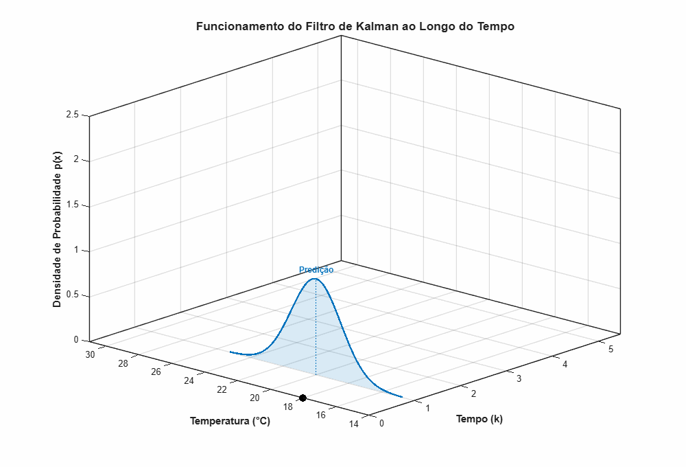

Os objetivos desta aula são compreender:
- A definição e propriedades do Ruído Branco;
- O conceito de autocorrelação e densidade espectral de potência (PSD);
- O Filtro de Wiener;
- A resolução prática do filtro via Equações de Wiener-Hopf;
- O Filtro de Kalman: estimador recursivo de estado ótimo no espaço de estados;
- Exemplos.
Revisão: Variáveis Aleatórias
Uma Variável Aleatória (V.A.) $X$ é uma função que associa um número real a cada resultado de um experimento aleatório
Para V.A. contínuas, definimos a Função Densidade de Probabilidade (PDF) $p(x)$, que satisfaz:
$$p(x) \ge 0 \quad \text{e} \quad \int_{-\infty}^{\infty} p(x) dx = 1$$
Revisão: Esperança e Variância
Dois operadores estatísticos fundamentais caracterizam uma variável aleatória:
- Esperança Matemática (Média $\mu_X$): representa o valor médio esperado da V.A.
$$E[X] = \int_{-\infty}^{\infty} x p(x) dx$$
- Variância ($\sigma_X^2$): representa o grau de dispersão da V.A. em torno de sua média.
$$Var(X) = E[(X - \mu_X)^2] = E[X^2] - (E[X])^2$$
Revisão: Distribuição Gaussiana
A Distribuição Normal (Gaussiana) é a mais importante no contexto estocástico devido ao Teorema do Limite Central. Sua PDF é dada por:
$$p(x) = \frac{1}{\sqrt{2\pi\sigma^2}} \exp\left(-\frac{(x - \mu)^2}{2\sigma^2}\right)$$
Notação usual: $X \sim \mathcal{N}(\mu, \sigma^2)$.

Carl Friedrich Gauss (1777-1855)
Revisão: Distribuição Gaussiana
Para uma variável aleatória com distribuição normal (Gaussiana), denota-se por $$X\sim\mathcal{N}(\mu,\sigma^2)$$
em que o desvio padrão ($\sigma$) determina a probabilidade de ocorrência:
- Intervalo $\pm1\sigma$: $68.27\%$ de probabilidade.
- Intervalo $\pm2\sigma$: $95.45\%$ de probabilidade.
- Intervalo $\pm3\sigma$: $99.73\%$ de probabilidade.
Revisão: Relação entre Duas V.A.s
Para analisar o comportamento conjunto de duas variáveis $X$ e $Y$:
Revisão: Probabilidade Condicional
A probabilidade condicional mede a probabilidade de um evento $A$ ocorrer dado que outro evento $B$ já ocorreu:
$$P(A|B) = \frac{P(A \cap B)}{P(B)}, \quad \text{se } P(B) > 0$$
O termo $P(A \cap B)$ representa a probabilidade conjunta (ambos os eventos ocorrendo simultaneamente), enquanto $P(B)$ atua como o espaço amostral reduzido.
Revisão: Regra de Bayes
Permite atualizar a probabilidade de uma hipótese $A$ a partir de uma nova evidência ou medição $B$:
$$P(A|B) = \frac{P(B|A)P(A)}{P(B)}$$
- $P(A|B)$ (Posterior): Probabilidade da hipótese corrigida pela evidência.
- $P(B|A)$ (Verossimilhança): Probabilidade de observar a evidência sob a hipótese.
- $P(A)$ (Priori): Probabilidade inicial antes da nova evidência.
- $P(B)$ (Evidência): Probabilidade total da evidência (fator de escala).
Revisão: Probabilidade Total
$$P(A) = \int p(A,B) dB$$
Portanto,
$$
P(A)=\int p(A|B)p(B)dB
$$
Processamento Estocástico de Sinais
No mundo real, os sinais de interesse são corrompidos por ruídos e incertezas que não podem ser descritos por funções determinísticas simples. Nós os modelamos como processos estocásticos:

Ruído Branco
Um processo estocástico $w[k]$ é chamado de ruído branco se suas amostras em diferentes instantes são totalmente desconexas (não correlacionadas):
- Média Nula: $\mu_w = E[w[k]] = 0$
- Variância Constante: $\sigma_w^2 = E[(w[k] - \mu_w)^2]$
- Independência Temporal (Autocorrelação):
$$R_{ww}[m] = E[w[k]w[k+m]] = \sigma_w^2 \delta[m]$$
Por que "Branco"? A Analogia Óptica
Assim como a luz branca contém todas as frequências visíveis com a mesma intensidade, a Densidade Espectral de Potência (PSD) do ruído branco é constante para todas as frequências:
$$S_{ww}(e^{j\omega}) = \mathcal{F}\{R_{ww}[m]\} = \sum_{m=-\infty}^{\infty} \sigma_w^2 \delta[m] e^{-j\omega m} = \sigma_w^2$$
- Espectro plano (Flat Spectrum) de $-\pi$ a $\pi$.
- Contém potência igual em todas as faixas de frequência.
Filtro de Wiener
Como recuperar o sinal útil $s[k]$ a partir de uma medição ruidosa $$x[k] = s[k] + \varepsilon[k]$$
O Filtro de Wiener é um sistema Linear Invariante no Tempo (LIT) ótimo que minimiza o Erro Médio Quadrático (MSE):
$$\min_{h} E[e^2[k]] = E[(s[k] - \hat{s}[k])^2]$$
Estrutura do Filtro FIR de Wiener
Para um filtro FIR causal com $M+1$ coeficientes $h = [h_0, h_1, \dots, h_M]^T$, a estimativa é:
$$\hat{s}[k] = \sum_{i=0}^{M} h_i x[k-i] = h^T \mathbf{x}[k]$$
em que $\mathbf{x}[k] = [x[k], x[k-1], \dots, x[k-M]]^T$.
Queremos encontrar os coeficientes $h$ que minimizam o erro médio quadrático:
$$J(h) = E[(s[k] - h^T \mathbf{x}[k])^2]$$
Estrutura do Filtro FIR de Wiener
$$\hat{s}[k] = \sum_{i=0}^{M} h_i x[k-i] = h^T \mathbf{x}[k]$$
Queremos encontrar os coeficientes $h$ que minimizam o erro médio quadrático:
$$J(h) = E[(s[k] - h^T \mathbf{x}[k])^2]$$
Princípio da Ortogonalidade
Para minimizar $J(h)$, derivamos em relação a cada coeficiente $h_j$ e igualamos a zero:
$$\frac{\partial J(h)}{\partial h_j} = -2 E\left[ (s[k] - h^T \mathbf{x}[k]) x[k-j] \right] = 0$$
Isso resulta no Princípio da Ortogonalidade:
$$E[e[k] x[k-j]] = 0, \quad \forall j = 0, \dots, M$$
A Equação de Wiener-Hopf
Expandindo a relação de ortogonalidade:
$$E\left[ \left(s[k] - \sum_{i=0}^{M} h_i x[k-i]\right) x[k-j] \right] = 0$$
Tem-se
$$\sum_{i=0}^{M} h_i E[x[k-i]x[k-j]] = E[s[k]x[k-j]]$$
A Equação de Wiener-Hopf
Definindo $$R_{xx}[j-i] = E[x[k-i]x[k-j]]\\R_{xs}[j] = E[s[k]x[k-j]]$$
Tem-se
$$\sum_{i=0}^{M} h_i R_{xx}[j-i] = R_{xs}[j], \quad j = 0, 1, \dots, M$$
Resolução Matricial
Em forma matricial, as equações de Wiener-Hopf tornam-se:
$$\mathbf{R}_{xx} \mathbf{h} = \mathbf{R}_{xs}$$
em que $\mathbf{R}_{xx}$ é a matriz de autocorrelação do sinal de entrada:
$$\begin{bmatrix}
R_{xx}[0] & R_{xx}[1] & \dots & R_{xx}[M] \\
R_{xx}[1] & R_{xx}[0] & \dots & R_{xx}[M-1] \\
\vdots & \vdots & \ddots & \vdots \\
R_{xx}[M] & R_{xx}[M-1] & \dots & R_{xx}[0]
\end{bmatrix} \begin{bmatrix} h_0 \\ h_1 \\ \vdots \\ h_M \end{bmatrix} = \begin{bmatrix} R_{xs}[0] \\ R_{xs}[1] \\ \vdots \\ R_{xs}[M] \end{bmatrix}$$
A solução ótima é simplesmente: $\mathbf{h}_{opt} = \mathbf{R}_{xx}^{-1} \mathbf{R}_{xs}$.
Wiener com Ruído Branco Aditivo
Se o ruído $\varepsilon[k]$ for branco com variância $\sigma_v^2$ e independente do sinal $s[k]$:
- Autocorrelação da entrada: $R_{xx}[m] = R_{ss}[m] + \sigma_v^2 \delta[m]$.
- Correlação cruzada: $R_{xs}[m] = R_{ss}[m]$ (pois $\varepsilon$ e $s$ não são correlacionados).
Portanto, a equação se reescreve como:
$$(\mathbf{R}_{ss} + \sigma_v^2 \mathbf{I}) \mathbf{h} = \mathbf{R}_{ss}$$
Wiener com Ruído Branco Aditivo
Se o ruído $\varepsilon[k]$ for branco com variância $\sigma_v^2$ e independente do sinal $s[k]$:
- Autocorrelação da entrada: $R_{xx}[m] = R_{ss}[m] + \sigma_v^2 \delta[m]$.
- Correlação cruzada: $R_{xs}[m] = R_{ss}[m]$ (pois $\varepsilon$ e $s$ não são correlacionados).
Portanto, a equação se reescreve como:
$$\mathbf{h}_\text{opt} = (\mathbf{R}_{ss} + \sigma_v^2 \mathbf{I})^{-1}\mathbf{R}_{ss}$$
Filtro de Kalman (Rudolf E. Kalman, 1960)
Diferente de Wiener, que projeta filtros fixos no domínio da frequência ou correlação temporal, o Filtro de Kalman:
- É formulado no domínio do tempo no espaço de estados.
- É recursivo: não requer armazenar um "buffer" de histórico de dados (ideal para sistemas em tempo real).
- Combina previsões físicas de um modelo dinâmico com medições reais ruidosas de forma estatisticamente ótima.

Rudolf Emil Kálmán (1930-2016)
Modelo Dinâmico Linear
O sistema dinâmico é representado por duas equações principais:
- Transição de Estado (Física):
$$\mathbf{x}_{k+1} = \mathbf{A} \mathbf{x}_{k} + \mathbf{B} \mathbf{u}_k + \mathbf{w}_k$$
- Equação de Medição (Sensores):
$$\mathbf{y}_k = \mathbf{C} \mathbf{x}_k + \mathbf{v}_k$$
Legenda:
- $\mathbf{x}_k$: vetor de estados.
- $\mathbf{y}_k$: medições ruidosas.
- $\mathbf{w}_k \sim N(0, \mathbf{Q})$: ruído de processo.
- $\mathbf{v}_k \sim N(0, \mathbf{R})$: ruído de medição.
O Ciclo Predição-Correção
1. Etapa de Predição (Time Update)
Dado que tenhos informações $\{y_0,\ldots,y_k\}$, qual é o estádo futuro $x_{k+1}$?
$$
p(x_{k+1}|y_0,\ldots,y_k)=?
$$
1. Etapa de Predição (Time Update)
Dado que tenhos informações $\{y_0,\ldots,y_k\}$, qual é o estádo futuro $x_{k+1}$?
$$
p(x_{k+1}|y_0,\ldots,y_k)=\int p(x_{k+1},x_k|y_0,\ldots,y_k)dx_k
$$
1. Etapa de Predição (Time Update)
- Predição de Estado:
$$\hat{\mathbf{x}}_{k+1|k} = \mathbf{A} \hat{\mathbf{x}}_{k|k} + \mathbf{B} \mathbf{u}_k$$
- Predição da Covariância do Erro:
$$\mathbf{P}_{k+1|k} = \mathbf{A} \mathbf{P}_{k|k} \mathbf{A}^T + \mathbf{Q}$$
2. Etapa de Correção (Measurement Update)
- Ganho de Kalman ($\mathbf{K}_k$):
$$\mathbf{K}_k = \mathbf{P}_{k+1|k} \mathbf{C}^T (\mathbf{C} \mathbf{P}_{k+1|k} \mathbf{C}^T + \mathbf{R})^{-1}$$
- Atualização de Estado com Medição:
$$\hat{\mathbf{x}}_{k+1|k+1} = \hat{\mathbf{x}}_{k+1|k} + \mathbf{K}_k (\mathbf{y}_{k+1} - \mathbf{C} \hat{\mathbf{x}}_{k+1|k})$$
- Atualização da Covariância do Erro:
$$\mathbf{P}_{k+1|k+1} = (\mathbf{I} - \mathbf{K}_k \mathbf{C}) \mathbf{P}_{k+1|k}$$
Filtro de Kalman
$$\hat{\mathbf{x}}_{k+1|k} = \mathbf{A} \hat{\mathbf{x}}_{k|k} + \mathbf{B} \mathbf{u}_k\\
\mathbf{P}_{k+1|k} = \mathbf{A} \mathbf{P}_{k|k} \mathbf{A}^T + \mathbf{Q}\\
\mathbf{K}_k = \mathbf{P}_{k+1|k} \mathbf{C}^T (\mathbf{C} \mathbf{P}_{k+1|k} \mathbf{C}^T + \mathbf{R})^{-1}\\
\hat{\mathbf{x}}_{k+1|k+1} = \hat{\mathbf{x}}_{k+1|k} + \mathbf{K}_k (\mathbf{y}_{k+1} - \mathbf{C} \hat{\mathbf{x}}_{k+1|k})\\
\mathbf{P}_{k+1|k+1} = (\mathbf{I} - \mathbf{K}_k \mathbf{C}) \mathbf{P}_{k+1|k}
$$
Filtro de Kalman Escalar
$$\hat{x}_{k+1|k} = a \hat{x}_{k|k} + b u_k\\
p_{k+1|k} = a^2p_{k|k} + q\\
k_k = \frac{p_{k+1|k} c}{c^2 p_{k+1|k} + r}\\
\hat{x}_{k+1|k+1} = \hat{x}_{k+1|k} + k_k (y_{k+1} - c \hat{x}_{k+1|k})\\
p_{k+1|k+1} = (1 - k_k c) p_{k+1|k}
$$
A Intuição do Ganho de Kalman ($k_k$)
O ganho $k_k$ decide se confiamos mais no modelo dinâmico ou no sensor:
$$k_k \approx \frac{\text{erro}_{pred}}{\text{erro}_{pred} + \text{erro}_{sensor}}$$
Note que
$$
\hat{x}_{k+1|k+1} = \hat{x}_{k+1|k} + k_k (y_{k+1} - c \hat{x}_{k+1|k})\\
$$
A Intuição do Ganho de Kalman ($k_k$)
O ganho $k_k$ decide se confiamos mais no modelo dinâmico ou no sensor:
$$k_k \approx \frac{\text{erro}_{pred}}{\text{erro}_{pred} + \text{erro}_{sensor}}$$
Note que
$$
\hat{x}_{k+1|k+1} = (1-k_kc)\hat{x}_{k+1|k} + k_k y_{k+1} \\
$$
A Intuição do Ganho de Kalman ($k_k$)
O ganho $k_k$ decide se confiamos mais no modelo dinâmico ou no sensor:
$$k_k \approx \frac{\text{erro}_{pred}}{\text{erro}_{pred} + \text{erro}_{sensor}}$$
- Sensores muito precisos ($r \to 0$): $k_k \to 1$. A estimativa ignora a predição e atualiza fortemente com a medição: $\hat{x}_{k|k} \approx y_k$.
- Modelo físico muito preciso ou medições péssimas ($p_{pred} \to 0$ ou $r \to \infty$): $k_k \to 0$. A estimativa segue estritamente a predição física: $\hat{x}_{k|k} \approx \hat{x}_{k|k-1}$.
O Ciclo de Kalman ao Longo do Tempo

Kalman: Sensor de Temperatura Ruidoso